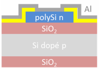

Smart Devices
Sensor Manufacturing at AIME
A AJOUTER !!The work to be done for this training-unit being the sensor datasheet, it is accessible by clicking here : See Datasheet >
WO3 nanoparticle synthesis
We first prepared the solution containing the tungsten trioxide nanoparticles (WO3).
We were able to synthesize these molecules from a chemical reaction, all in an aqueous medium, to limit the risks associated with nanoparticles
(both dust and dispersion in the water network by the uncontrolled solution).
We followed a protocol which aimed, in addition to producing these molecules of tungsten trioxide, to limit the ecological impact of this synthesis, mainly by limiting the waste related to this procedure (in particular by optimizing the fact that several groups carry out the same procedure, and thus limit to the maximum the rinsing (and thus the generation of waste related to this rinsing (dirty water) of the tools).
The whole procedure to create the nanoparticles in the solution is presented here :
The whole procedure to make the nanoparticles growth is presented here :
Elaboration of the microelectronic chip
We then had to proceed with the creation of the sensor chip itself, the one that would host our solution containing the nanoparticles.
The sensor is composed of 3 parts: a heating resistor made of doped poly-silicon (2-7 on the image), an aluminium resistor (4-5 on the image) for heating or measurement, and two interdigital combs (one on each side, 1-3 and 6-8 on the image) which will receive the layer of nanoparticles and which will then become our resistors sensitive to the gaseous environment (which will therefore make the gas sensor work).
Several steps in the chip creation process had already been completed when we recovered the chip, such as polysilicon deposition, doping and etching, dry oxide deposition and photo-etching, and metallization.

So the chip had this cut when we started working on it.
We had to do the metal etching, that is to say, remove, by photo-engraving, the aluminium where it is not necessary (to obtain the comb shapes we wanted).
 We will use a resin that reacts to light and will attack the aluminum in places where we do not want it. We will protect the parts to keep with an 'optical' mask that will block the light in these places.
We will then chemically remove the resin from the remaining areas.
We will use a resin that reacts to light and will attack the aluminum in places where we do not want it. We will protect the parts to keep with an 'optical' mask that will block the light in these places.
We will then chemically remove the resin from the remaining areas.
The whole procedure for the metal gravure is presented here :
The metal annealing will then be made by putting the chip into a 400°C oven during 20mn.
The microelectronic chip is now ready to host the nanoparticle solution.
Integration of the sensitive layer of nanoparticles on the chip
For the integration of the nanoparticles into the sensor, we will use dielectrophoresis.
Before that, however, we need to make a wedge bonding with aluminum-silicon wires, which will allow us to integrate our chip into a larger sensor, so that we can easily handle it (especially via pins that can be electrically connected easily).
Because of the high precision (wires of about 25 micrometers in diameter) of the handling, it is a speaker from the AIME laboratory who realized for us this wedge bonding.
The result can be seen on the left image.
Once the different pins were connected and accessible, we were able to perform dielectrophoresis.
We had to connect the pins of the interdigital comb, then deposit a drop of our nanoparticle solution on the sensor.We then had to pass an electric current for one minute.
Our particles will, thanks to the dielectrophoretic force, integrate on our interdigital comb, connected to the electric current.
Then, after the minute but still with the current, we had to rinse the sensor with water, and absorb, with a piece of dry tissue, the excess rinsing water. Once this is finished,
we can cut off the electric current.
The whole procedure for the dielectrophoresis is presented here :
Electrical characterization of the sensor under controlled atmosphere
Once the chip was completed and the nanoparticles integrated into it, we had to characterize it electrically. First, we took measurements in a conventional environment
to find out the resistances of the different sensor elements.
The procedure to carry out these measurements is detailed here:
For this, we followed a characterization procedure in a controlled environment, with alternating pure synthetic air and air loaded with gas (ethanol then ammonium).
The procedure for characterization in controlled atmosphere is this one: Thanks to this characterization in a controlled atmosphere, we were able to observe the resistance variations according to the presence of this or that gas, as well as the capacity of our sensor to regenerate between two measurements.
We can see, on the graph below, that the presence of ethanol causes less variation than ammonia, which will take longer to regenerate.
 Our sensor is now, after this characterization procedure, ready to be used, as we are sure that it is working and how it is working.
Our sensor is now, after this characterization procedure, ready to be used, as we are sure that it is working and how it is working.
Making our sensor a Smart Device for IoT
Design of the sensor's signal conditioner
In order to be able to integrate our sensor to an electronic board, we had to realize a signal conditioner. This one was going to allow to modify the current to increase it because of the great resistance that represents our gaz sensor.
This great resistance made the sensor unusable with an Arduino board, a board we have to use for the communication part, developed later. So we had to adapt the current, thanks to this circuit:
Design of the sensor's shield
Once this adaptor circuit had been designed and tested using simulation tools, we had to build a shield that would accommodate all the elements of our final architecture. We will therefore create this shield thanks to KiCad. We have integrated both this circuit and the chip used to communicate the data (RN2483 chip) and to connect our gas sensor to the shield.
Arduino Uno for LoRa communication and sensor integration
We then became interested in the communication we needed to put in place to allow our sensor to be used in an IoT environment. We used an arduino for the 'test' phase and a RN2483 chip for the communication itself. We had to solder this chip to allow it to be connected to our card (at the beginning, arduino, then, at the end, our own shield). We then used arduino code and the TTN library (TheThingsNetwork) made our card communicate with a given gateway. We were able to send measurements every X seconds and retrieve them from the TTN site.
We also had to take into account the energy consumption of our system, and therefore put the various components on standby when we did not need to use them, in particular the antenna during the measurement phases (and therefore non-transmission), as well as putting the sensor on standby during the transmission phases, and therefore non-measurement.
The arduino code allowing to realize the measurement and the sending with a reduced energy consumption can be visualized here.
Node-Red Human-machine interface
Once all the measurement and communication to the gateway was done, we had to realize the 'interface' part. We used node-red to create a dashboard that allows us to record the measurements and display them in a simple interface.
So, on node-red, we realized the flow we wanted to make, starting from a payload receptiond (ttn uplink), a 'decoding' function, and then a display in the dashboard. The 'msg.payload' is only present for debugging purposes.
The function we see in the node-red stream is a decoding function. It transforms the data received as input into usable data by a simple conversion of the payload from hexadecimal to decimal. This operation is performed for each payload arriving in Node-Red.
The dashboard, once the payload has been converted, simply displays the information related to the gas sensor. Here we can see the last measurement taken as well as its evolution over a period of time.